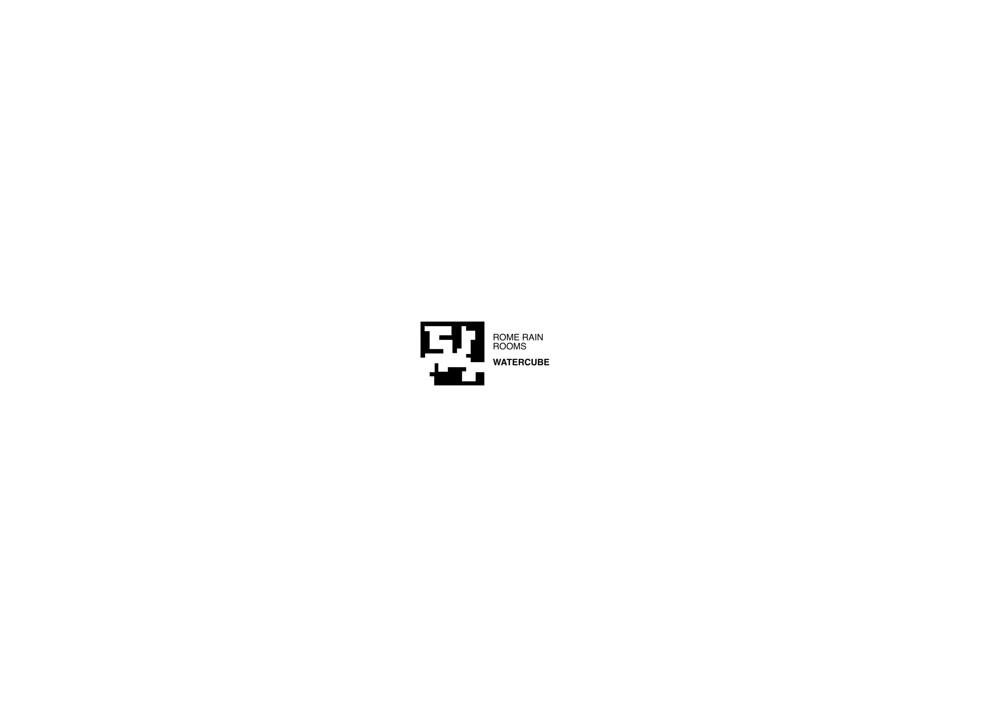
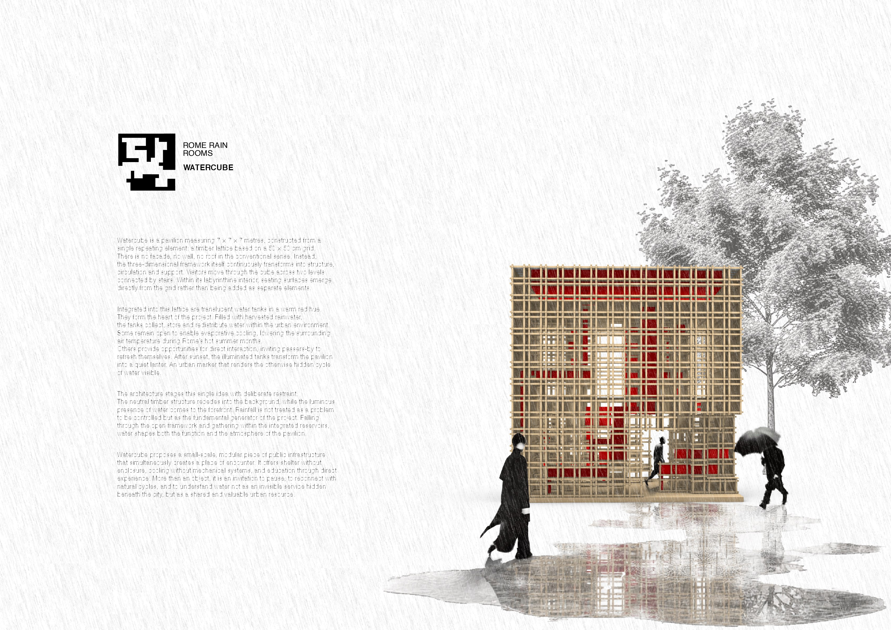
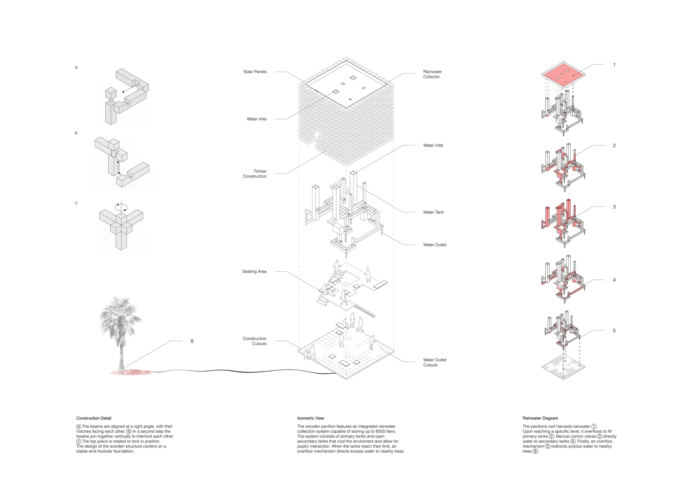
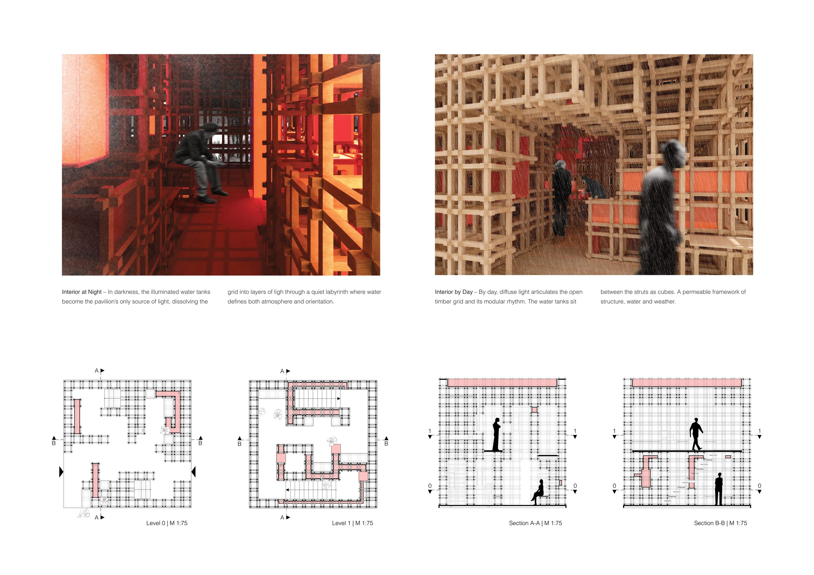
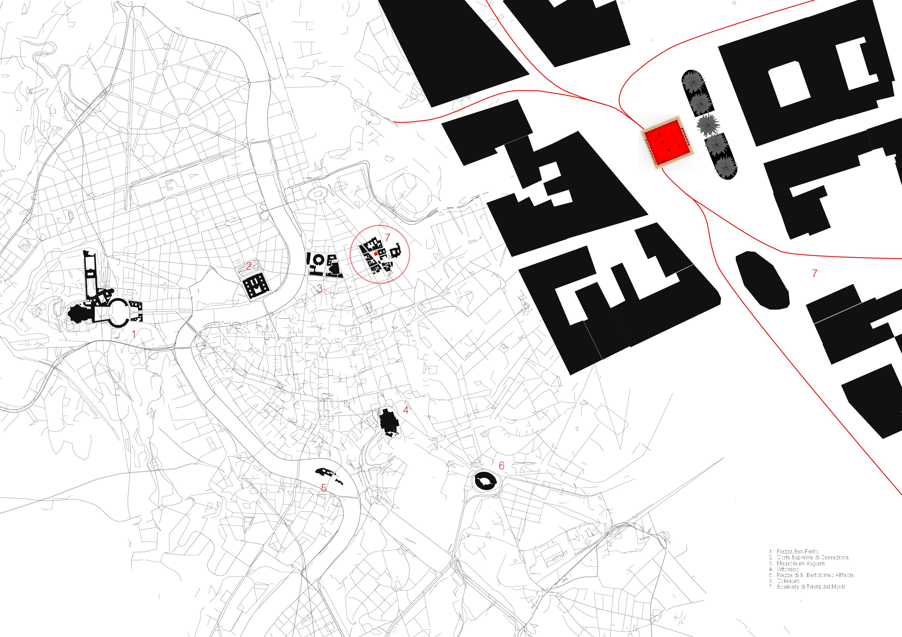

Watercube
Projekt aus dem Fach Entwurf Raum, eingereicht als Wettbewerbsbeitrag für die RomeRainRoom Competition von BUILDNER Architecture Competitions.

Watercube ist ein Pavillon mit den Maßen 7 × 7 × 7 Meter, der aus einem einzigen sich wiederholenden Element besteht: einem Holzraster auf Grundlage eines 50 × 50 cm großen Gitters. Es gibt keine Fassade, keine Wand und kein Dach im herkömmlichen Sinn. Stattdessen verwandelt sich das dreidimensionale Tragwerk kontinuierlich in Struktur, Erschließung und Möblierung.
Besucherinnen und Besucher bewegen sich auf zwei Ebenen durch den Würfel, die über Treppen miteinander verbunden sind. Im labyrinthartigen Inneren entstehen Sitzflächen unmittelbar aus dem Raster selbst, anstatt als separate Elemente hinzugefügt zu werden.
In dieses Holzraster sind transluzente Wassertanks in einem warmen Rotton integriert. Sie bilden das Herzstück des Projekts. Gefüllt mit gesammeltem Regenwasser dienen sie dazu, Wasser im städtischen Raum aufzufangen, zu speichern und wieder bereitzustellen. Einige Tanks bleiben nach oben offen und ermöglichen durch Verdunstungskühlung eine spürbare Absenkung der Umgebungstemperatur während der heißen Sommermonate in Rom. Andere laden zur direkten Interaktion ein und bieten Passantinnen und Passanten die Möglichkeit, sich mit Wasser zu erfrischen. Nach Einbruch der Dunkelheit verwandeln die beleuchteten Tanks den Pavillon in eine ruhige, leuchtende Laterne – einen städtischen Orientierungspunkt, der den sonst verborgenen Wasserkreislauf sichtbar macht.
Die Architektur inszeniert diese zentrale Idee mit bewusster Zurückhaltung. Die neutrale Holzstruktur tritt in den Hintergrund, während die leuchtende Präsenz des Wassers in den Mittelpunkt rückt. Regen wird nicht als Problem verstanden, das kontrolliert werden muss, sondern als eigentlicher Ausgangspunkt des Entwurfs. Er sammelt sich in den integrierten Reservoirs und prägt sowohl die Funktion als auch die Atmosphäre des Pavillons.
Watercube versteht sich als ein modularer, kleinteiliger Baustein öffentlicher Infrastruktur, der zugleich einen Ort der Begegnung schafft. Der Pavillon bietet Schutz, ohne sich abzuschließen, sorgt für Kühlung ohne technische Anlagen und vermittelt Wissen durch unmittelbares Erleben. Mehr als ein architektonisches Objekt ist Watercube eine Einladung zum Verweilen, zur bewussten Auseinandersetzung mit natürlichen Kreisläufen und dazu, Wasser nicht als unsichtbare Ressource unter der Stadt wahrzunehmen, sondern als gemeinsames und wertvolles Gut des urbanen Raums.




This project was created in collaboration with David Schüler.